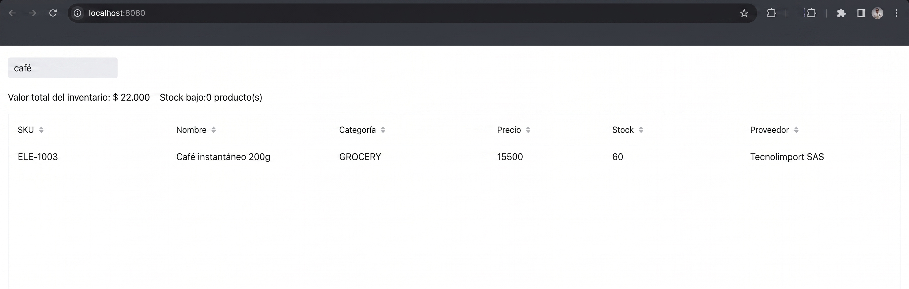

Sesión 3: KPIs con Signals computados¶
Rama: sesion-3
Lo que vas a lograr: dos números de negocio (el valor total del
inventario y la cantidad de productos con stock bajo) que se recalculan
solos, en tiempo real, incluso cuando el usuario está filtrando. Sin un
solo listener manual.
Esta sesión es donde Signals deja de ser solo un truco de sincronización de UI y se gana el título de "sistema de estado reactivo". Piensa en un caso real: el área de operaciones te pide un panel donde el valor total del inventario y la cantidad de productos con stock bajo se vean siempre actualizados, sin que nadie tenga que refrescar la página ni apretar un botón "Recalcular". La mayoría de los proyectos usan Signals (o cualquier librería reactiva parecida) solo para dos cosas: sincronizar un campo de búsqueda, y sincronizar la selección de una tabla. Nunca para calcular algo. Acá sí, porque vamos a encadenar signals para derivar un dato de negocio a partir de otro.
Parte 1: El objetivo, antes del código¶
Queremos que en cualquier momento se puedan leer dos cosas, sin escribir un solo listener manual:
- Cuánto vale en pesos todo el inventario que se está mostrando ahora mismo.
- Cuántos productos están por debajo de su nivel de reorden.
Y queremos que estos dos números se recalculen solos cuando cambian los datos, incluso cuando el usuario está escribiendo en el buscador de la Sesión 2. Si filtramos por "café", el valor total del inventario debería mostrar solo el valor del café, no de todo el catálogo.
Parte 2: El paso clave: que los datos visibles SEAN un Signal¶
Hasta ahora, updateProductList recibía el resultado del filtro y se lo
pasaba directo al grid con grid.setItems(filtered). Para poder derivar
KPIs de esos datos, primero necesitamos que el resultado del filtro exista
como un signal, no solo como una variable de método.
Y cambiamos el método de filtrado para que, en vez de tocar el grid directamente, actualice este nuevo signal:
private void updateVisibleProducts(String query) {
List<Product> filtered = new ArrayList<>(products);
if (query != null && !query.isBlank()) {
String lowerQuery = query.toLowerCase();
filtered = products.stream()
.filter(p -> p.getSku().toLowerCase().contains(lowerQuery)
|| p.getName().toLowerCase().contains(lowerQuery)
|| p.getCategory().name().toLowerCase().contains(lowerQuery)
|| (p.getSupplier() != null && p.getSupplier().toLowerCase().contains(lowerQuery)))
.collect(Collectors.toCollection(ArrayList::new));
}
visibleProducts.set(filtered);
}
Y en el constructor, un segundo efecto separado, encargado únicamente de
reflejar visibleProducts en el grid:
Signal.effect(this, () -> updateVisibleProducts(searchQuery.get()));
Signal.effect(this, () -> grid.setItems(visibleProducts.get()));
Borra el código viejo de la Sesión 2, no lo dejes al lado
Estos dos efectos reemplazan, no complementan, a
Signal.effect(this, () -> updateProductList(searchQuery.get())); de la
Sesión 2: borra esa línea del constructor. Borra también el método
updateProductList completo, ya que nadie lo llama más. Si lo dejás
ahí "por si acaso", vas a terminar con dos caminos distintos escribiendo
al mismo grid, y ese es justo el tipo de bug que se manifiesta a veces
sí y a veces no, según cuál de los dos efectos corra último.
Por qué separar en dos efectos
Podríamos haber dejado todo en un solo efecto que filtra y llama a
grid.setItems(...) de una. Lo separamos a propósito: el primer efecto
convierte "búsqueda" en "datos visibles" (una decisión de negocio); el
segundo refleja "datos visibles" en la UI (una decisión de
presentación). Esta separación es la que nos permite, en la Parte 3,
derivar los KPIs directamente de visibleProducts sin que le importe
de dónde salieron esos datos: de una búsqueda, de una alta, de una
baja, de lo que sea.
Parte 3: Signals computados: Signal.computed¶
Con visibleProducts como signal, ya podemos declarar valores derivados de
él, sin tocarlo. A esto se le llama un signal computado: se define una
sola vez con Signal.computed(...), y Vaadin lo recalcula automáticamente
cada vez que cambia cualquier signal leído dentro, en este caso,
visibleProducts.
private final Signal<BigDecimal> totalInventoryValue = Signal.computed(() ->
visibleProducts.get().stream()
.map(p -> p.getUnitPrice().multiply(BigDecimal.valueOf(p.getStockQuantity())))
.reduce(BigDecimal.ZERO, BigDecimal::add));
private final Signal<Long> lowStockCount = Signal.computed(() ->
visibleProducts.get().stream().filter(Product::isLowStock).count());
Vaadin al paso: Signal.computed vs Signal.effect
Los dos reaccionan a cambios, pero para cosas distintas.
Signal.effect corre un efecto secundario (actualizar un componente,
imprimir un log) y no devuelve nada útil para leer después.
Signal.computed devuelve un nuevo signal de solo lectura, cuyo
valor es el resultado del cálculo. Usás effect cuando quieres hacer
algo al cambiar un dato; usás computed cuando quieres derivar un
dato nuevo a partir de otros.
Ahora armamos la UI de estos dos números: dos "tarjetas" simples, con un
título y un valor, enlazadas con bindText directamente a los signals
computados.
private HorizontalLayout buildKpiBar() {
Span totalValueAmount = new Span();
totalValueAmount.bindText(totalInventoryValue.map(this::formatCurrency));
Div totalValueCard = kpiCard("Valor total del inventario", totalValueAmount);
Span lowStockAmount = new Span();
lowStockAmount.bindText(lowStockCount.map(count -> count + " producto(s)"));
Div lowStockCard = kpiCard("Stock bajo", lowStockAmount);
HorizontalLayout kpiBar = new HorizontalLayout(totalValueCard, lowStockCard);
kpiBar.addClassName("kpi-bar");
return kpiBar;
}
private Div kpiCard(String title, Span valueSpan) {
Span titleSpan = new Span(title);
titleSpan.addClassName("kpi-title");
valueSpan.addClassName("kpi-value");
Div card = new Div(titleSpan, valueSpan);
card.addClassName("kpi-card");
return card;
}
private String formatCurrency(BigDecimal amount) {
NumberFormat format = NumberFormat.getCurrencyInstance(new Locale("es", "CO"));
format.setMaximumFractionDigits(0);
return format.format(amount);
}
Agrega add(buildKpiBar()); en el constructor, justo antes de add(grid).
Las clases CSS (kpi-bar, kpi-card, kpi-title, kpi-value) todavía no
tienen estilo (eso llega en la Sesión 8), así que por ahora se van a ver
como texto plano, sin tarjeta. Es un buen momento para recordar que en
Vaadin la lógica y el estilo son pasos separados: primero el dato correcto
en pantalla, después el CSS.
Parte 4: El momento clave: probalo filtrando¶
Corre la aplicación y escribe "café" en el buscador.

Lo que acaba de pasar
No escribiste ningún código que diga "cuando busques, actualiza
también el total". Ese comportamiento surgió solo, porque
totalInventoryValue depende de visibleProducts, y visibleProducts
cambia con cada búsqueda. La cadena de dependencias (búsqueda →
datos visibles → KPI) la armaste una sola vez, y a partir de ahí se
mantiene sola. Este es el tipo de resultado que casi ningún tutorial
introductorio de Signals muestra, porque casi ninguno encadena signals
más allá de dos pasos, y es justo lo que un caso de negocio real
necesita.
Parte 5: Marcar (sin todavía colorear) el stock bajo¶
Para cerrar, preparamos el terreno de la Sesión 8: le decimos al Grid qué filas son de stock bajo, aunque el color todavía no se vea.
Agrega esta línea dentro de configureGrid().
¿Por qué no se ve nada distinto todavía?
setPartNameGenerator le agrega una etiqueta CSS (low-stock-row) a
las celdas de esas filas, pero sin una regla de CSS que le dé color a
esa etiqueta, no cambia nada visualmente. Es un ejemplo real de separar
"marcar el dato" de "darle estilo": dos responsabilidades, dos
momentos. Vas a escribir esa regla de CSS en la Sesión 8.
Cierre de la sesión¶
En la Sesión 4 construimos el formulario de detalle, enlazado a la selección del Grid y validado con Binder.